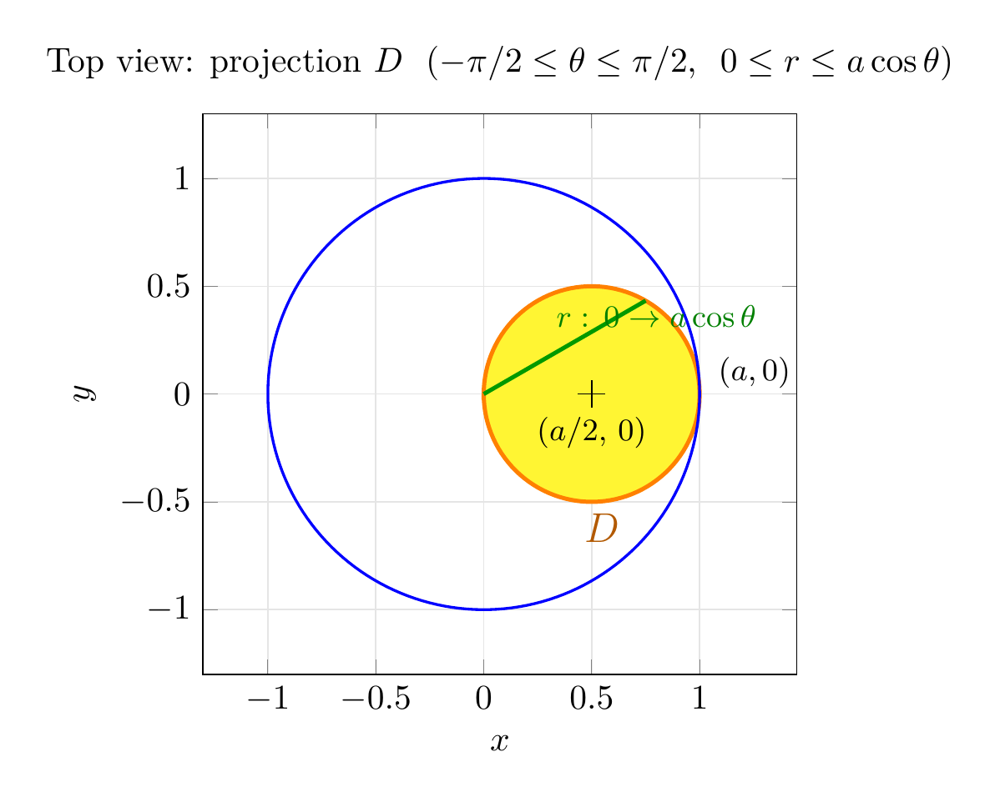

Please solve the problem in the following image.
(Image `20260928_233905_729303_utc_0800_0.png`. Alt text: Image: human_20260928_233905_729303_utc_0800)
20260928_233905_729303_utc_0800_0.png
End of problem
Answer
# Stewart 15.8, Exercise 26 — Cylinder $r=a\cos\theta$ Cut from a Sphere
## Setting up (why cylindrical coordinates work here)
The solid is the region **inside the sphere** $x^2+y^2+z^2=a^2$ **and inside the cylinder** $r=a\cos\theta$. Cylindrical coordinates are ideal because:
- The sphere is $r^2+z^2=a^2$, i.e. $-\sqrt{a^2-r^2}\le z\le \sqrt{a^2-r^2}$.
- The cylinder $r=a\cos\theta$ **gives the upper bound for $r$ directly** — this is exactly the situation cylindrical coordinates are designed for.
**First find the projection $D$ of the solid onto the $xy$-plane.** Converting $r=a\cos\theta$ to rectangular coordinates:
$$
r^2 = ar\cos\theta \;\Longrightarrow\; x^2+y^2 = ax \;\Longrightarrow\; \left(x-\tfrac{a}{2}\right)^2+y^2=\left(\tfrac{a}{2}\right)^2 .
$$
So $D$ is the disk of radius $a/2$ centered at $(a/2,0)$ — it lies entirely in the half-plane $x\ge 0$, i.e. $\cos\theta\ge 0$. Therefore
$$
-\frac{\pi}{2}\le\theta\le\frac{\pi}{2},\qquad 0\le r\le a\cos\theta .
$$
This projection region $D$ is shown below (green ray shows how $r$ runs from $0$ out to the cylinder $r=a\cos\theta$):
---
\documentclass[border=10pt]{standalone}
\usepackage{pgfplots}
\pgfplotsset{compat=1.18}
\begin{document}
\begin{tikzpicture}
\begin{axis}[
axis equal image,
xlabel={$x$}, ylabel={$y$},
xmin=-1.3, xmax=1.45, ymin=-1.3, ymax=1.3,
title={Top view: projection $D$ \ ($-\pi/2 \leq \theta \leq \pi/2$, \ $0 \leq r \leq a\cos\theta$)},
grid=both, grid style={gray!20}]
% shaded region D = half-disk bounded by circle r=a cos(theta) and the y-axis
\addplot[fill=yellow!80, draw=orange, very thick, domain=-90:90, samples=120]
({cos(x)^2}, {cos(x)*sin(x)}) \closedcycle;
% sphere footprint
\addplot[blue, thick, domain=0:360, samples=180]
({cos(x)}, {sin(x)});
% ray r: 0 -> a cos(theta) at theta = 30 degrees
\addplot[green!60!black, very thick, domain=0:cos(30), samples=2]
({x*cos(30)}, {x*sin(30)});
% center of cylinder
\addplot[only marks, mark=+, mark size=4, black] coordinates {(0.5,0)};
\node[anchor=north] at (axis cs:0.5,-0.05) {\small $(a/2,\,0)$};
\node[anchor=west] at (axis cs:1.03,0.1) {\small $(a,0)$};
\node at (axis cs:0.55,-0.62) {\large $\color{orange!70!black}D$};
\node[anchor=west] at (axis cs:0.28,0.36) {\small $\color{green!50!black}r:\,0 \to a\cos\theta$};
\end{axis}
\end{tikzpicture}
\end{document}

pgfplots_0.png
---
## Part (a): Compute the volume
On $D$, the solid is bounded below by the lower hemisphere and above by the upper hemisphere:
$$
-r\;\text{to}\;+r:\quad -\sqrt{a^2-r^2}\le z\le \sqrt{a^2-r^2} .
$$
So
$$
V=\iiint_E dV=\int_{-\pi/2}^{\pi/2}\int_{0}^{a\cos\theta}\int_{-\sqrt{a^2-r^2}}^{\sqrt{a^2-r^2}} r\, dz\, dr\, d\theta .
$$
**Inner integral** (note the Jacobian factor $r$ in $dV = r\,dz\,dr\,d\theta$):
$$
\int_{-\sqrt{a^2-r^2}}^{\sqrt{a^2-r^2}} r\, dz = 2r\sqrt{a^2-r^2} .
$$
**Middle integral** — substitute $u=a^2-r^2$, $du=-2r\,dr$:
$$
\int_{0}^{a\cos\theta} 2r\sqrt{a^2-r^2}\, dr
=\left[-\tfrac{2}{3}(a^2-r^2)^{3/2}\right]_{0}^{a\cos\theta}
=\frac{2a^3}{3}\left(1-|\sin\theta|^3\right).
$$
(Here $(a^2-a^2\cos^2\theta)^{3/2}=a^3|\sin^3\theta|$; on $[-\pi/2,\pi/2]$ this is $a^3|\sin\theta|^3$.)
**Outer integral** — the integrand is even in $\theta$, so use symmetry:
$$
V=\frac{4a^3}{3}\int_{0}^{\pi/2}\left(1-\sin^3\theta\right)d\theta .
$$
Using $\int_0^{\pi/2}d\theta=\frac{\pi}{2}$ and $\int_0^{\pi/2}\sin^3\theta\,d\theta=\frac{2}{3}$:
$$
V=\frac{4a^3}{3}\left(\frac{\pi}{2}-\frac{2}{3}\right)=\boxed{\;V=\left(\frac{2\pi}{3}-\frac{8}{9}\right)a^3\approx 1.2055\,a^3\;}
$$
**Verification (computer check, $a=1$):** symbolic evaluation gives $V=\frac{2\pi}{3}-\frac{8}{9}=1.2055062\ldots$, and an independent 3-D Monte Carlo simulation (3,000,000 random points in the unit cube) gives $1.2037$ — in agreement to within the sampling error. ✓
*Sanity check:* the whole sphere has volume $\frac{4\pi}{3}a^3\approx 4.19\,a^3$; the cylinder cut-out has a base of area $\frac{\pi a^2}{4}$ and height up to $2a$, so a volume near $1.2\,a^3$ is very reasonable. ✓
---
## Part (b): Illustrating the solid
The figure below shows the sphere (translucent blue, $x^2+y^2+z^2=a^2$) with the cylinder $(x-\frac{a}{2})^2+y^2=(\frac{a}{2})^2$ (orange) on the same screen. The cylinder is tangent to the $z$-axis at the origin, passes through $(a,0,0)$, and is trimmed where it meets the sphere. The **red curves** are the rims where the cylinder intersects the sphere — a single smooth curve through the origin; its upper half is exactly the graph of $z=\sqrt{a^2-r^2}$ over the boundary of $D$. The solid of part (a) is the column-like region inside the cylinder between the two hemispheres.
---
pgfplots_1.png
---
## Key takeaways for this type of problem
1. **Always start with the projection.** For a cylinder like $r=a\cos\theta$ (or $r=a\sin\theta$), convert to rectangular form $x^2+y^2=ax$ to *see* the region $D$; the constraint $\cos\theta\ge 0$ pins the $\theta$-range to $[-\pi/2,\pi/2]$.
2. **$\theta$-bounds come from where $r=a\cos\theta\ge 0$**, not from a full $2\pi$ sweep — forgetting this is the most common error.
3. **Order of integration:** $z$ first (hemisphere bounds $\pm\sqrt{a^2-r^2}$), then $r$ (from $0$ to the cylinder), then $\theta$. The Jacobian $r$ must appear in the innermost integrand.
4. **The $u=a^2-r^2$ substitution** handles $\int 2r\sqrt{a^2-r^2}\,dr$ instantly, and **exploiting evenness in $\theta$** (doubling the $[0,\pi/2]$ integral) avoids absolute-value headaches.
5. **Check plausibility:** compare against the full sphere volume $\frac{4\pi}{3}a^3$ — here the answer is a modest fraction of it, as expected for a cylinder of radius $a/2$ inscribed off-center.
$$
\boxed{V=\left(\frac{2\pi}{3}-\frac{8}{9}\right)a^3}
$$